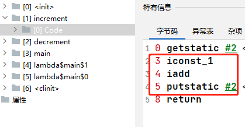
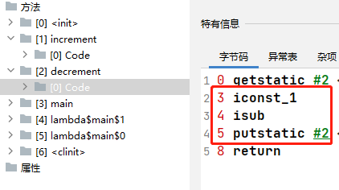
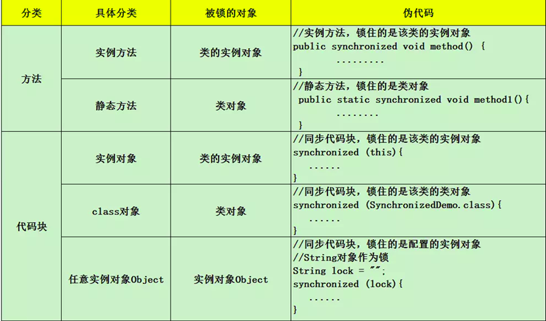

应用场景
解决线程安全问题
解决方案
加锁： 序列化的访问临界资源
java中的实现 :
- 阻塞： synchronized reentrantLock
- 非阻塞： cas+自旋
示例
代码很简单，创建两个线程，一个线程做累加操作，一个线程做递减操作，且操作的是同一个变量，按照我们预期值最终输出结果应该为0，但是结果会符合我们预计吗？
1 | public class SyncDemo { |
代码运行结果显而易见，输出结果不确定，且很难得到我们的预期值。
示例分析
首先从我们的理解来说，上面示例中一个线程自增，一个线程递减，不论哪个线程执行，都会去操作共享变量counter。然而在自增操作中，会先从内存中获取共享变量值，然后进行累加，最后再将结果赋值给共享变量。可想变量的累加并不是原子操作，递减操作也是同理，最终会出现累加时获取了值，还没有进行累加或者累加后还没有赋值给共享变量，此时又在同步进行递减操作，那最终结果可想而知会出现正数、负数以及我们期望的0，三种情况都可能出现。
从jvm字节码层面分析
递增操作：

递减操作：

两个概念
临界区（ Critical Section）
- 一个程序运行多个线程本身是没有问题的
- 问题出在多个线程访问共享资源
- 多个线程读共享资源其实也没有问题
- 在多个线程对共享资源读写操作时发生指令交错，就会出现问题
一段代码块内如果存在对共享资源的多线程读写操作，称这段代码块为临界区，其共享资源为临界资源
竞态条件（ Race Condition ）
多个线程在临界区内执行，由于代码的执行序列不同而导致结果无法预测，称之为发生了竞态条件
为了避免临界区的竞态条件发生，有多种手段可以达到目的：
- 阻塞式的解决方案：synchronized，Lock
- 非阻塞式的解决方案：原子变量
注意：
虽然 java 中互斥和同步都可以采用 synchronized 关键字来完成，但它们还是有区别的：
互斥是保证临界区的竞态条件发生，同一时刻只能有一个线程执行临界区代码
同步是由于线程执行的先后、顺序不同、需要一个线程等待其它线程运行到某个点
synchronized的使用
synchronized 同步块是 Java 提供的一种原子性内置锁，Java 中的每个对象都可以把它当作一个同步锁来使用，这些 Java 内置的使用者看不到的锁被称为内置锁，也叫作监视器锁。
加锁方式

示例解决
用synchronized解决上面的问题，对临界区代码进行加锁，可以直接锁住相应的累加和递减方法，我们运行多次后可以看到每次都会得到我们的预期值0

...
...
Copyright 2021 sunfy.top ALL Rights Reserved